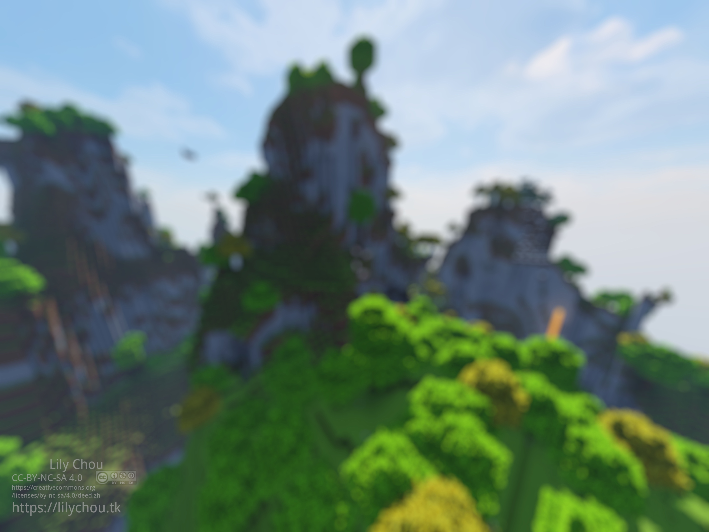

背景图片

这个是网页背景所用的版本，由原图压缩到2160x1620并加了油画滤镜和模糊效果

压缩版 画质很渣 5760x4320 4:3 jpeg
原图的信息
截图与Minecraft
光影 projectLUMA+-+v1.32.zip默认设置
使用由Fabric强力驱动的Replaymod和Optifabric渲染截图
世界类型： 放大化
世界种子：3433577300284869398
世界生成未使用星光
游戏版本 1.18.2
截图坐标（大概）： 103 188 -122
截图视角（大概）: facing east (towards posotove X)(-50 15)
材质包： XeKr方纹淡彩 + 附加包： 自然掉落，额外模型，姹紫嫣红,花叶模型